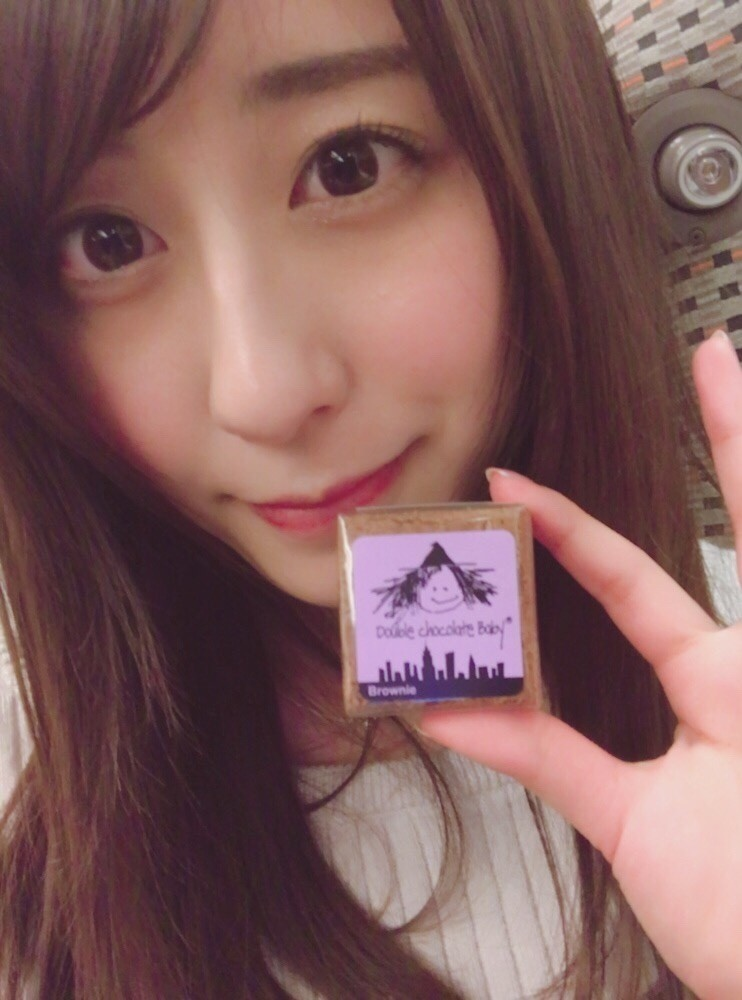

| 2017/04 02 Sun | チョコ好き |
ちはるーむへようこそ
今日のちはるーむではお抹茶を点てました。
今日は国際子どもの本の日。
CO2削減の日。
デンマークの童話作家、
アンデルセンの誕生日にちなんで制定されたそうです。
私は子どもの頃から本が好きだったな〜
「わかったさん」とか「怪盗ゾロリ」が好きで
よく読んでたの覚えてる！
ゾロリは大好きすぎて毎回買ってもらってた！
イシシとノシシ懐かしい◎
わかったさん、こまったさんは図書室で借りてたな〜
シー(4)オー(0)ツー(2)にちなんで。
クリーンエネルギーがもっと沢山出来ますように。
ぶー。
◎ChihaFood◎
昨日の全握の差し入れで頂いた
チョコブラウニーを紹介します！
「Fat Which Bakery」さん

私が食べたのは
double chocolate babyでした。
名前も可愛い〜
チョコがとっても濃厚で、
アメリカンな感じ！！
私はチョコが大好きなので、
チョコブラウニーなんて大好物♡
小さいサイズだから
濃厚でもパクッと食べられちゃうのもいいですよね

他にも、チョコ以外にも色々な種類の
ブラウニーがあったので
試してみたいな〜と思いました☺︎
皆さんも是非食べてみてください〜
メンバーみんなも美味しい美味しい言いながら食べてましたよ！
------------------------------------------------♡
♬ ChihaMusic
「恋をしたのは」aikoさん
一度聞いたら耳から離れない、
ずっと聞いていたい曲。
そして口ずさみたくもなる。
一見幸せそうな歌詞だから
切ない部分が目立って良い。
"些細に掛け違えた赤色 あの日の廊下の白色"
この赤色と白色の意味するものって
色々ある気がする。
こういうのを考えながら聞くのも
またいいよね。
早くカラオケで歌いたい。
気付いたら桜が咲き始めてる！！
嬉しい〜♡♡
でも早く見に行かないと
散っちゃうね(> <)
写真撮りたいな
おやすみ
斎藤ちはる
コメント(230)
2017/04/02 23:42